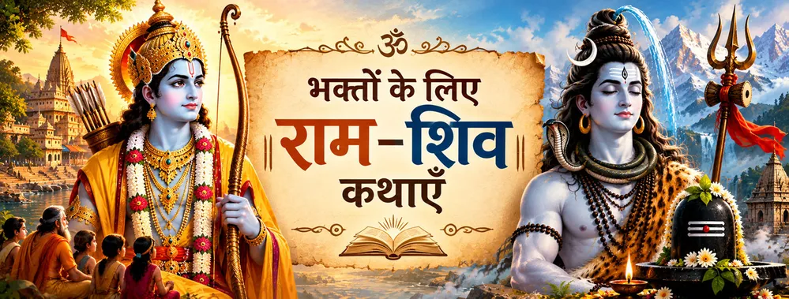

शिव राम-कथा सुनते हैं
रामचरितमानस की परंपरा में शिव राम की महिमा के ज्ञाता और कथावाचक के रूप में आते हैं। आरंभिक परंपरा इस कथा को शिव से जोड़ती है और आगे शिव द्वारा पार्वती को राम-कथा सुनाने का प्रसंग मिलता है।

जीवंत भक्ति परंपरा
राम और शिव की कथाएँ केवल पवित्र ग्रंथों के प्रसंग नहीं हैं; भक्ति-परंपरा में वे श्रद्धा, विनम्रता, नाम-स्मरण और समन्वय की शिक्षा देने वाले प्रसंग भी बनती हैं।
एक भक्त इस संबंध को अनेक द्वारों से अनुभव कर सकता है—शिव द्वारा राम-कथा का श्रवण, राम द्वारा शिव का सम्मान, रामेश्वरम् की पवित्रता, राम-नाम की महिमा, अथवा यह शिक्षा कि भक्ति किसी दूसरे दिव्य रूप के प्रति वैर में नहीं बदलनी चाहिए।
इन परंपराओं की कई परतें हैं। वाल्मीकि रामायण, रामचरितमानस, पौराणिक आख्यान, मंदिर-परंपराएँ और क्षेत्रीय भक्तिसाहित्य हर प्रसंग को हमेशा एक ही रूप में प्रस्तुत नहीं करते। इस अंतर को समझकर पढ़ने से कथाएँ कम नहीं, बल्कि अधिक अर्थपूर्ण बनती हैं।
भक्ति के चार द्वार
रामचरितमानस की परंपरा में शिव राम की महिमा के ज्ञाता और कथावाचक के रूप में आते हैं। आरंभिक परंपरा इस कथा को शिव से जोड़ती है और आगे शिव द्वारा पार्वती को राम-कथा सुनाने का प्रसंग मिलता है।
रामेश्वरम् की परंपरा भक्तों के सामने राम द्वारा शिव के सम्मान की एक प्रभावशाली छवि रखती है। रामचरितमानस में रामेश्वर प्रसंग को स्पष्ट भक्तिपरक स्थान मिलता है, जबकि अन्य परंपराएँ पूजा और लिंग-स्थापना की परिस्थितियों को विस्तार देती हैं।
रामचरितमानस में सबसे प्रमुख भक्तिपरक संकेतों में एक है—शिव का राम-नाम का निरंतर स्मरण। यह शिक्षा नाम को स्मरण, आध्यात्मिक आश्रय और काशी की पवित्र परंपरा से जोड़ती है।
कथाएँ बार-बार राम और शिव को परस्पर श्रद्धा के संबंध में रखती हैं। भक्त के लिए यह समझने का मार्ग बनता है कि सच्ची उपासना किसी दूसरे पवित्र दिव्य रूप के प्रति वैर रखे बिना ईश्वर-प्रेम को गहरा कर सकती है।
इन कथाओं को कैसे पढ़ें?
एक भक्तिपरक कथा एक से अधिक प्रकार का अर्थ रख सकती है। एक परत किसी विशेष ग्रंथ से जुड़ी हो सकती है; दूसरी किसी मंदिर के स्थल-पुराण या क्षेत्रीय स्मृति से; और तीसरी वह हो सकती है जिसमें पीढ़ियों के भक्तों ने प्रार्थना और तीर्थयात्रा में उस कथा को समझा है।
राम–शिव परंपरा के लिए यह अंतर विशेष रूप से उपयोगी है। यह संबंध अनेक ग्रंथों और समुदायों में प्रतिष्ठित है, लेकिन अलग-अलग प्रसंगों के सूक्ष्म विवरण बदल सकते हैं। इन अंतरों को सुरक्षित रखने से भक्त ग्रंथीय प्रमाण और जीवंत परंपरा—दोनों का सम्मान कर सकता है।
भक्त की साधना
ध्यानपूर्वक श्रवण से आरंभ करें। मानस परंपरा में राम-कथा सुनना स्वयं एक भक्तिपरक साधना माना जाता है, जो संशय को शांत कर मन को स्मरण की ओर ले जा सकता है।
परंपरा बार-बार शिव को राम-नाम से जोड़ती है। इसलिए भक्त के लिए कथा दैनिक जीवन में नाम के माध्यम से ईश्वर-स्मरण की सरल साधना बन सकती है।
राम–शिव कथाएँ ऐसी भक्ति-दृष्टि का आमंत्रण देती हैं जिसमें एक रूप के प्रति श्रद्धा दूसरे रूप के निषेध की मांग नहीं करती। मानस में राम और शिव का संबंध इसका विशेष उदाहरण है।
पवित्र कथाओं का गहरा उद्देश्य केवल किसी घटना को याद करना नहीं, बल्कि दैनिक जीवन में विनम्रता, करुणा, सत्य और श्रद्धा जैसे गुणों को विकसित करना भी है।
एक शांत चिंतन
जब राम और शिव का स्मरण साथ किया जाता है, तब भक्त तुलना से आगे बढ़कर श्रद्धा की ओर जा सकता है। कथा गहराई से सुनने, सच्चे मन से स्मरण करने और अनावश्यक विभाजन के बिना पवित्रता को देखने की प्रेरणा बनती है।
भक्तों के सामान्य प्रश्न
नहीं। अलग-अलग प्रसंग विभिन्न ग्रंथीय और भक्तिपरक परतों से जुड़े हैं, जिनमें रामायण-परंपरा, रामचरितमानस, पौराणिक साहित्य, मंदिर-परंपरा और क्षेत्रीय भक्ति शामिल हैं।
रामचरितमानस में शिव को निरंतर राम-नाम जपते हुए प्रस्तुत किया गया है और इस शिक्षा को काशी की पवित्र परंपरा से जोड़ा गया है। यह ग्रंथ का एक प्रमुख भक्तिपरक विषय है।
विशेष घटना से आगे बढ़कर इन कथाओं को नाम-स्मरण, विनम्रता, श्रद्धा, पवित्र मैत्री और विभिन्न भक्तिपरंपराओं के समन्वय की शिक्षा के रूप में समझा जा सकता है।
यह इस बात पर निर्भर करता है कि किस परंपरा और ग्रंथ की चर्चा हो रही है। भक्तिसाहित्य में यह पूजा, स्तुति और संवाद के ठोस आख्यानों के साथ-साथ धार्मिक व्याख्या के रूप में भी व्यक्त होता है। इसलिए स्रोतों को स्पष्ट नाम देना बेहतर है, न कि इसे एक ही व्याख्या तक सीमित कर देना।